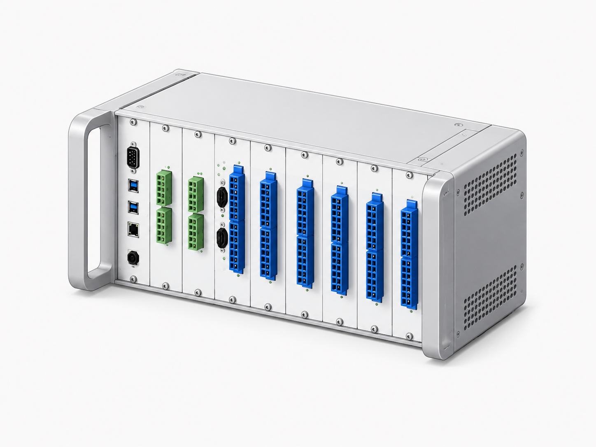
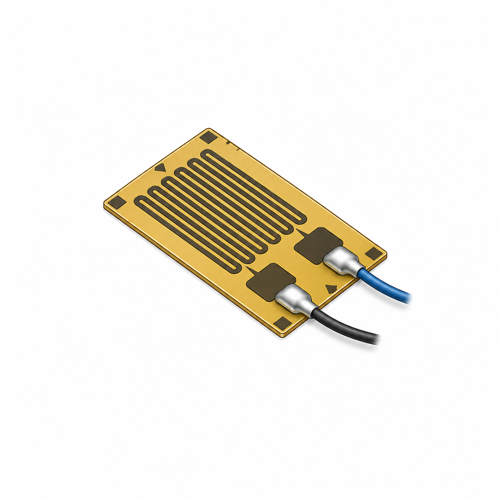
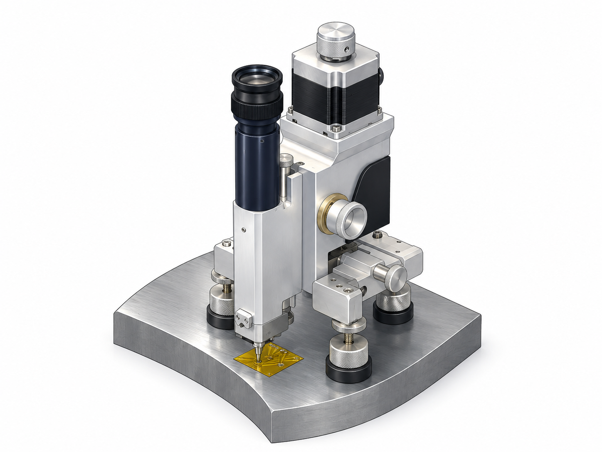
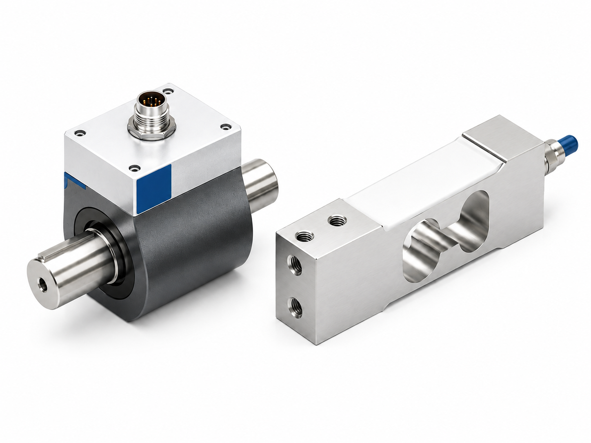
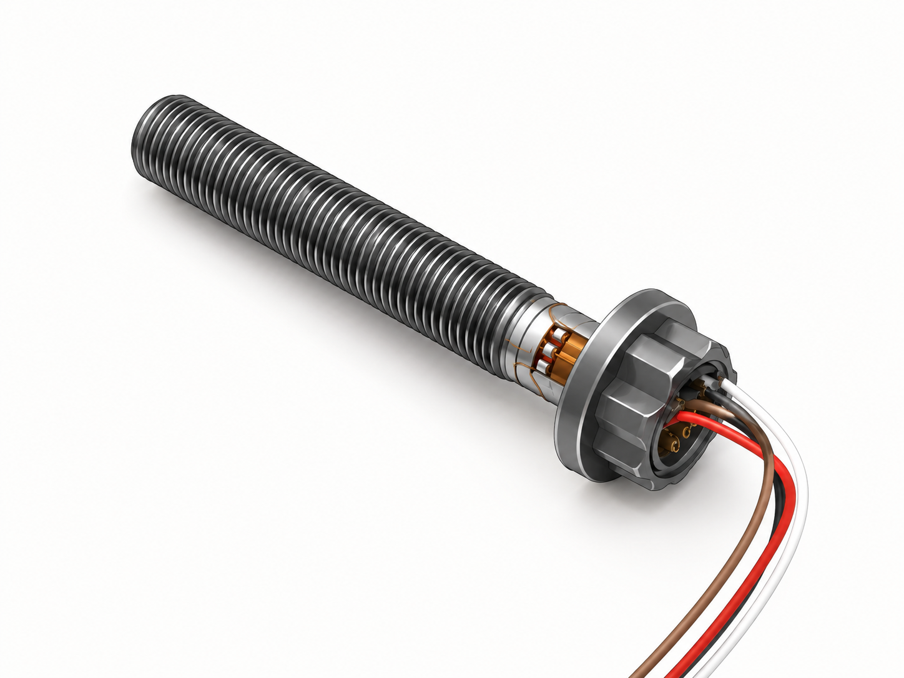
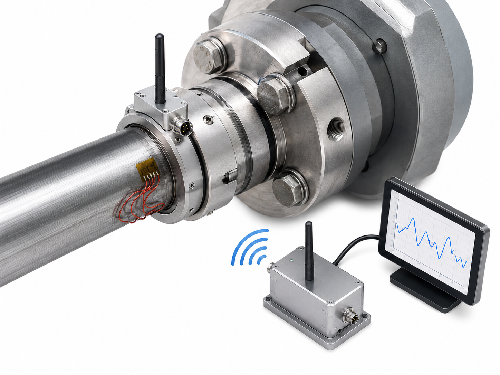
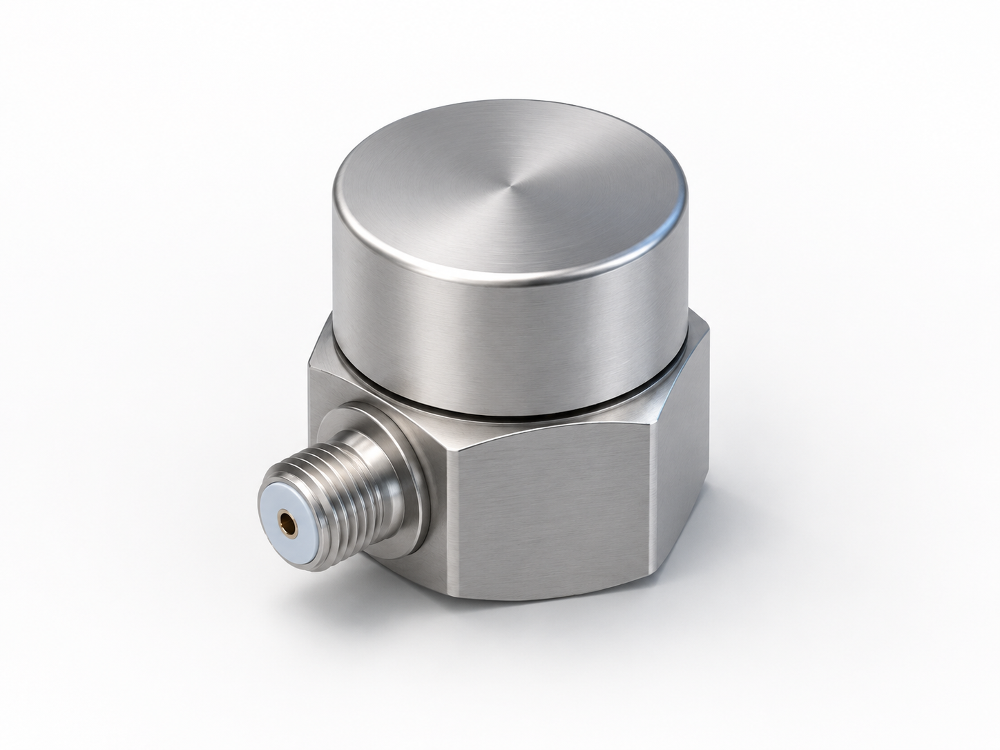
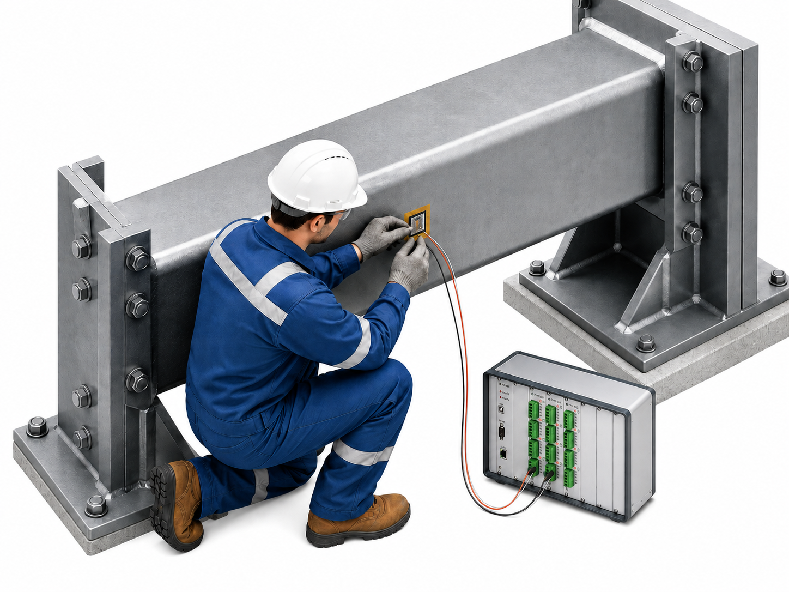

HBM · GANTNER · MMF · SINT · BDSENSOR · SIMEX · DataTranslation 등 글로벌 브랜드 공급과 자체 설계·제작 솔루션.
데이터 계측, 센서 공급, 특수 목적 측정 — 각 영역에서 표준 제품 공급과 맞춤 설계 모두 지원.
각 카드를 클릭하면 해당 기술자료 페이지로 이동합니다.

HBM, Gantner, Data Translation, CNDTECH 장비 공급 및 구축. 스트레인·전압·전류·가속도 멀티 입력, 실시간 모니터링 소프트웨어 설정.

TML, HBM 스트레인게이지 전 라인업 공급. 일반형·고온형·방수형·잔류응력 측정용 로제트 게이지 포함.

플라스틱, 고분자소재, 금속 소재 잔류응력측정 및 분석 지원. ASTM E837 잔류응력측정 솔루션 제공.

로드셀, 토크센서, 압력센서, 변위센서 공급. HBM, MMF, SIMEX, BD Sensors 등 유럽 전문 브랜드 취급.

풀브릿지 스트레인게이지 기반 커스텀 센서 제작. 축력 측정 볼트, 토크 측정 시스템 등 고객 요구사양 맞춤 설계·제작.

회전체·이동체의 토크, 하중, 진동 데이터를 무선으로 실시간 취득. 인덕티브·배터리 타입, 다채널 지원.

MMF 가속도계, 마이크로폰, 진동 측정 시스템 공급. 진동 분석 및 소음 측정 지원.

시험 설계, 센서 설치, 데이터 수집, 분석까지 원스톱 현장 서비스. 조선·자동차·항공우주·국방·에너지·연구기관 현장 경험 보유.